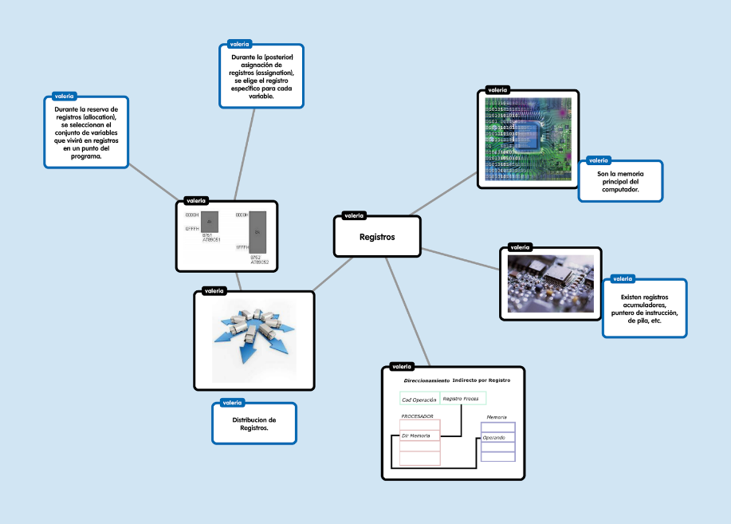

Los registros son la memoria principal de la computadora. Existen diversos registros de propósito general y otros de uso exclusivo. Algunos registros de propósito general son utilizados para cierto tipo de funciones. Existen registros acumuladores, puntero de instrucción, de pila, etc.
Los registros son espacios físicos dentro del microprocesador con capacidad de 4 bits hasta 64 bits dependiendo del microprocesador que se emplee.
¿Quiénes lo utilizan?
Antes de nada, para el desarrollo de esta parte hablaremos indistintamente de registros de activación o de marcos de pila. Esto se debe a que en la documentación encontrada sobre el manejo de los registros ebp y esp se hace mención a dicho concepto de marco de pila. Puesto que el lenguaje permite recursividad, los registros de activación se asignan dinámica mente.
Distribución
La UCP o CPU tiene 14 registros internos, cada uno de ellos de 16 bits (una palabra). Los bits están enumerados de derecha a izquierda, de tal modo que el bit menos significativo es el bit 0.
Los registros se pueden clasificar de la siguiente forma:
Registros de datos:
AX: Registro acumulador. Es el principal empleado en las operaciones aritméticas.
BX: Registro base. Se usa para indicar un desplazamiento.
CX: Registro contador. Se usa como contador en los bucles.
DX: Registro de datos.
Estos registros son de uso general y también pueden ser utilizados como registros de 8 bits, para utilizarlos como tales es necesario referirse a ellos como por ejemplo: AH y AL, que son los bytes alto (high) y bajo (low) del registro AX. Esta nomenclatura es aplicable también a los registros BX, CX y DX.
Registros de segmentos:
CS: Registro de segmento de código. Contiene la dirección de las instrucciones del programa.
DS: Registro segmento de datos. Contiene la dirección del área de memoria donde se encuentran los datos del programa.
SS: Registro segmento de pila. Contiene la dirección del segmento de pila. La pila es un espacio de memoria temporal que se usa para almacenar valores de 16 bits (palabras).
ES: Registro segmento extra. Contiene la dirección del segmento extra. Se trata de un segmento de datos adicional que se utiliza para superar la limitación de los 64Kb del segmento de datos y para hacer transferencias de datos entre segmentos.
Registros punteros de pila:
SP: Puntero de la pila. Contiene la dirección relativa al segmento de la pila.
BP: Puntero base. Se utiliza para fijar el puntero de pila y así poder acceder a los elementos de la pila.
Registros índices:
SI: Índice fuente.
DI: Índice destino.
¿Cuáles su aplicación en la generación de códigos?
1. usar el registro de y si está en un registro que no tiene otra variable, y además y no
Está viva ni tiene uso posterior. Si no:
2. usar un registro vacío si hay. Si no:
3. usar un registro ocupado si op requiere que x esté en un registro o si x tiene uso
Posterior. Actualizar el descriptor de registro. Si no:
4. usar la posición de memoria de x
Ejemplo

Bibliografia:
Lenguajes y Automatas 2. (2020). 2.2.2 Código P . 2021, de Blogspot Sitio web: https://equiponegro8.blogspot.com/2020/03/2_56.html
S/N. (S/N). UNIDAD II. 14/04/2021, de ITPN Sitio web: http://itpn.mx/recursosisc/7semestre/leguajesyautomatas2/Unidad%20II.pdf